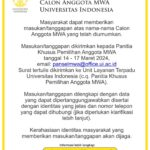
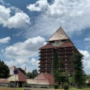

Berita Kampus & Update

15/03/2024
UI Umumkan 34 Calon Majelis Wali Amanat UI Unsur Masyarakat Yang Lolos Seleksi Tahap Administrasi

14/03/2024
UI Tertinggi se-Indonesia versi EduRank 2024 dan Makin Naik di Tingkat Global
14/03/2024
UI Tertinggi se-Indonesia versi EduRank 2024 dan Makin Naik di Tingkat Global
15/03/2024
UI Umumkan 34 Calon Majelis Wali Amanat UI Unsur Masyarakat Yang Lolos Seleksi Tahap Administrasi